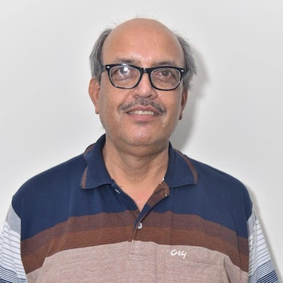

 It gives me immense pleasure to invite you to the School of Basic Science. The school proposes to offer Bachelors, Masters and Ph.D programs in Physics, Chemistry, Mathematics , Geography and Information Technology in order to nurture young minds towards scientific challenges. We aim and are committed to impart quality education in order to enhance students interest towards basic sciences. Our School plays a vital role in teaching basic sciences courses as prescribed by the curriculum of the University Campus as per National Education Policy (NEP-2020). We also try to fascinate student experience in a research environment with an eye on current day technology applications. Students are given the best opportunity to expose themselves towards collaborative research across various disciplines for their academic growth. Initiatives have been taken to get them the opportunity to avail national and international internship/scholarships. Regular seminars/workshops, conferences etc. by scientific and industrial researchers at national and international level cultivate interest towards current research in the scientific fields. The intense attention and rigorous training in all academic pursuits prepares them for competing at the global level. In realizing the vision of development of high quality education and research, the School of Basic Sciences consisted of dedicated faculty members. Their aim is to train young minds and prepare them for future scientific goals. The teaching module adopted in classroom teaching comprises lectures, tutorials and practicals is based on the application of innovation strategies and strictly followed by an active interaction between teachers and students. Therefore, the School of Basic Sciences takes an active incentive to develop a perfect approach to improve students’ competence of visualizing scientific strands and inspire them to handle intricate challenges that lie at the confluence of science and technology. Professor R.K Dwivedi Director School of Basic Sciences
The Physics department is an important part of the School of Basic Sciences, UIET at the CSJM University, Kanpur. This department was established in 1996. The department has seven accomplished, motivated and dedicated faculty members with credible expertise in various research areas such as High Energy Particle Physics, Optoelectronics and Fibre Optics, Solid State Physics and Amorphous Semiconductor Physics. The department also has two assisting staff members for the Laboratory. Physics Department offering UG, PG and Ph.D. Programme such as B.Sc. (Hons.), B.Sc. in different combinations with physics, M.Sc. (Physics), Doctorate in different research areas. Role of Physics in Engineering Disciplines Engineering arises from the practical application of the ideas originating from Physical Sciences. Hence a strong foundation in Physical Sciences is an essential criteria for any branch of engineering. The subject of Physics being one of the most important constituents of the Physical Sciences is thus a key pre requisite for pursuing any branch of engineering.
Welcome to the Department of Chemistry,School of Basic Sciences, CSJM University Kanpur. Department offers B.Sc. (Honours), B.Sc. (PCM), M.Sc. in Chemistry, M.Sc. in Industrial Chemistry, Chemistry in B.Tech programmes, Certificate Program in Laboratory Techniques and Ph.D. programmes. Department has good infrastructure which includes seminar hall, smart classrooms, well equipped separate laboratories for UG, PG and research students. The Department provides various value added training programs, various activities, industry exposure, industrial training and projects,placement assistance and drives to inculcate high technical skills, culture of teamwork, leadership qualities for achieving excellence and thereby increasing employability skills. The core values of the department help the students to develop their overall personality to compete and work at global level. The faculty of the department is well qualified, and motivated with a strong commitment to teaching and research.The faculty members have also been active in organizing scientific meetings/workshops, value added courses from time to time. Our aim is to provide healthy work atmosphere where everyone can accomplish their goal by doing their best in science and technology.We look forward to build a most excellent and vibrant academic environment to grab the world wide opportunities. Alumni are important stakeholders in our department. They are holding good positions in various fields viz. higher education, Secondary education, R & D and industries. We are proud of you and would love to be in touch.To conclude this message, let me extend a warm welcome to all. We are constantly on the lookout for bright young minds, who would enrich our department by joining us in the capacity of students as well as researchers.
Dr. Rashmi Dubey
Coordinator, Department of Chemistry
School of Basic Sciences, CSJM University
Contact Us:Chhatrapati Shahu Ji Maharaj University, Kanpur(Formerly Kanpur University, Kanpur) Kalyanpur, Kanpur-208024 E-mail: csjmu@kanpuruniversity.org |
|---|